En ce moment
L'activité en cours, lisible du fond de la classe.
Le nom de la séance, ce qui est prévu, le temps qu'il reste. Les élèves savent où ils en sont, et ce qui vient ensuite.
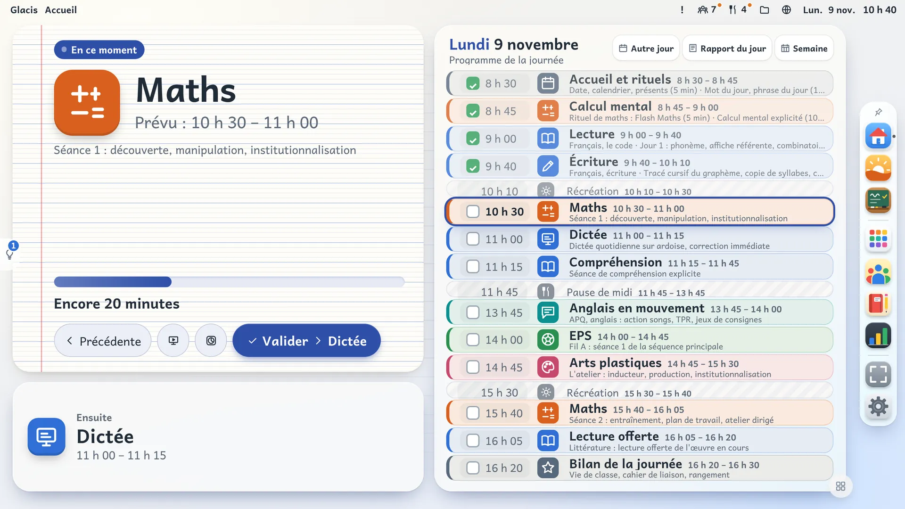
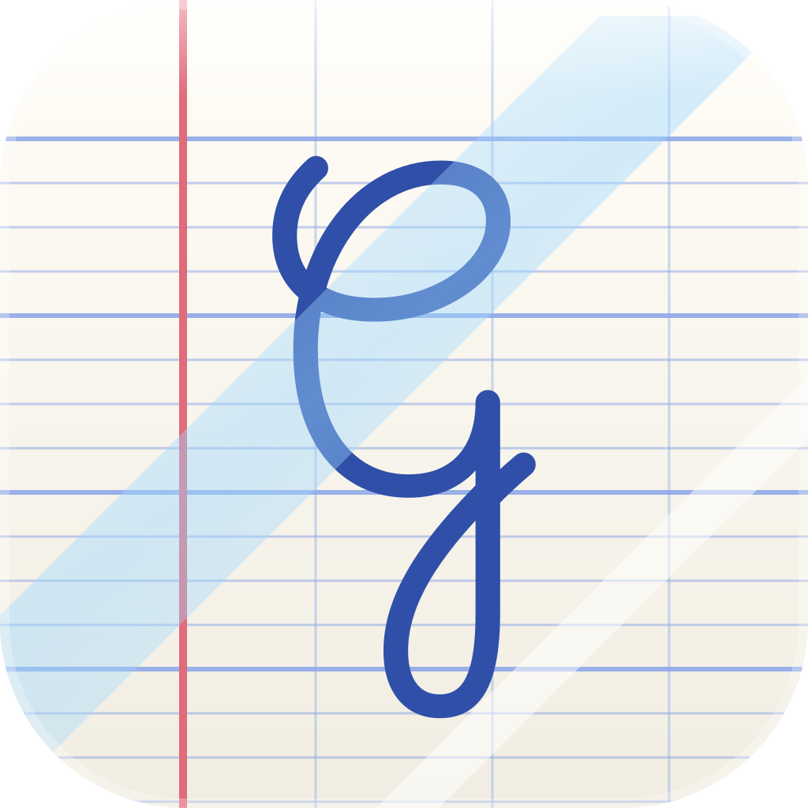
Glacis TéléchargerToute la classe, sur un seul écran.
La journée au tableau, les rituels, les tableaux et les outils à manipuler. Pensé par un enseignant pour l'école élémentaire, et utilisable sans connexion.
Gratuit·Logiciel libre·Sans compte
la journée
L'emploi du temps s'affiche au tableau et suit l'heure. Vous gardez la main : un clic valide l'activité, et la suivante arrive.
En ce moment
Le nom de la séance, ce qui est prévu, le temps qu'il reste. Les élèves savent où ils en sont, et ce qui vient ensuite.

La semaine
L'emploi du temps type, la semaine, le jour : tout se glisse et se modifie dans Glacis. Un cahier journal au format Word peut être importé.
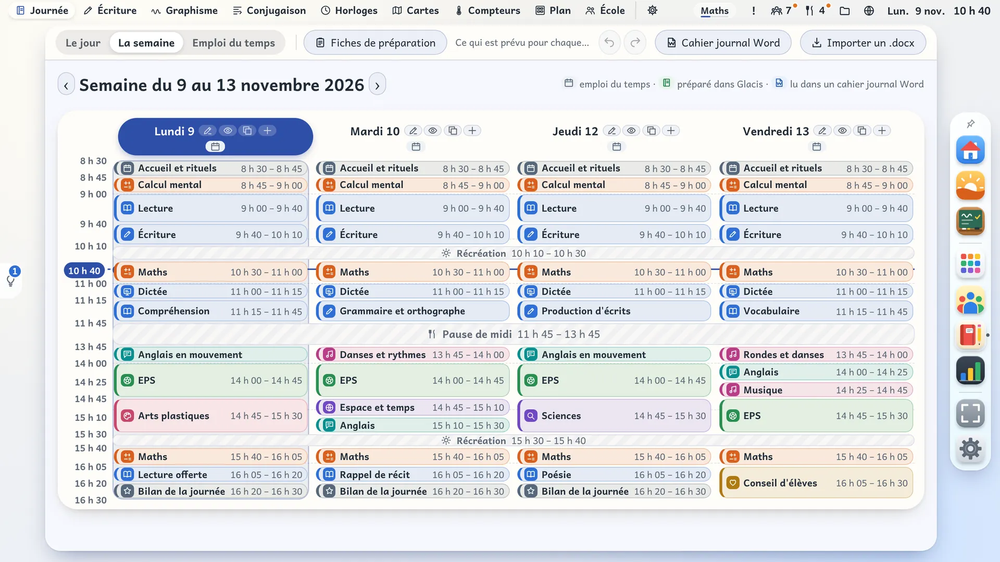
Les élèves
Les présents et les demi-pensionnaires en deux gestes. Un prénom tiré au sort, des groupes, les métiers de la classe : chacun passe à son tour.
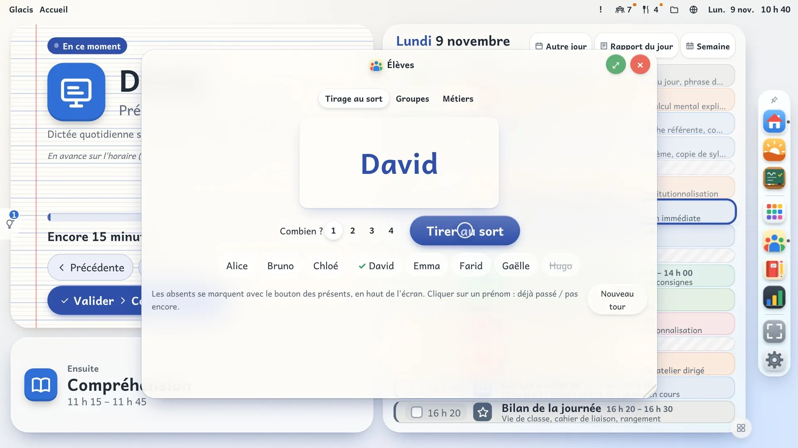
Le soir
Ce qui a été fait est coché au fil de la journée. Le rapport du jour et la préparation du lendemain se font au même endroit.

les rituels
Calcul mental, Flash Maths, explorer un nombre, lecture flash, mot et phrase du jour, problèmes. Les cartes s'enchaînent au tableau, le corrigé suit.
les tableaux
Une page blanche, un lignage, du matériel de numération, une opération posée, des instruments de géométrie. Tout ce qui est posé au tableau peut être repris plus tard.
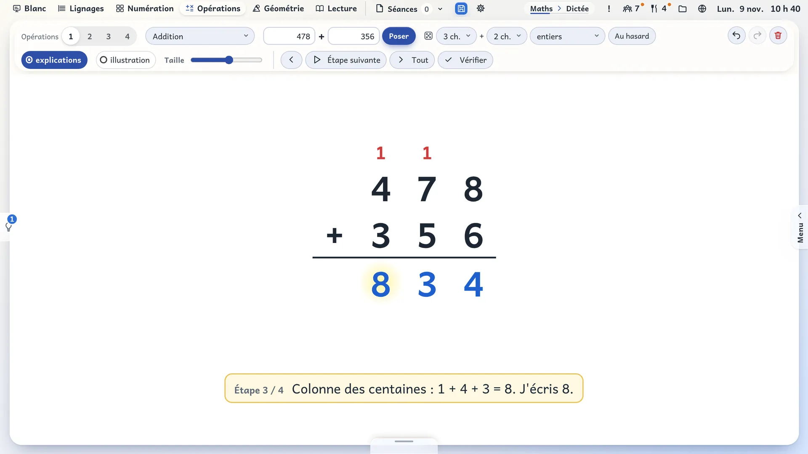
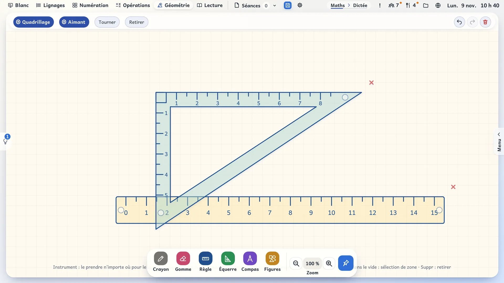
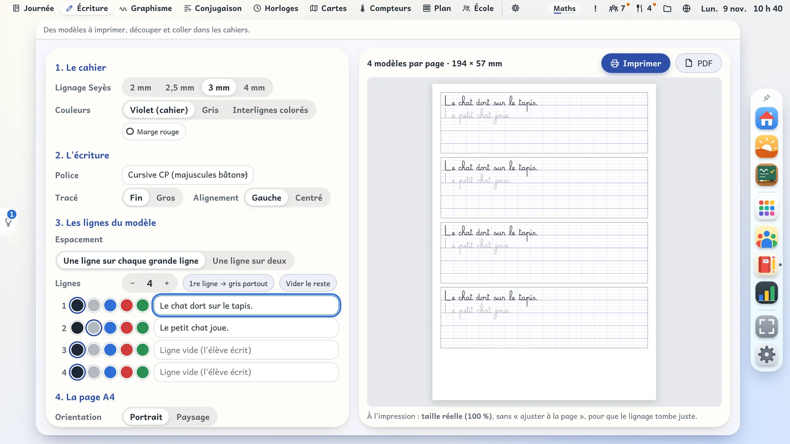
les outils
Un poids lâché fait pencher la balance, dix pièces s'échangent contre un billet, les réglettes s'aimantent bout à bout. À la souris, ou au doigt sur un écran interactif.
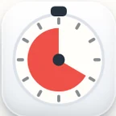
Minuteur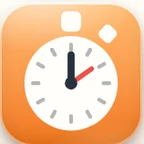
Chronomètre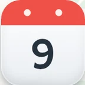
Calendrier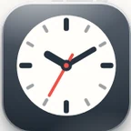
Horloge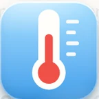
Thermomètre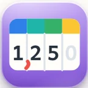
Tableau de conversion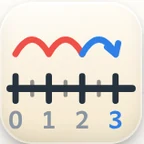
Droite graduée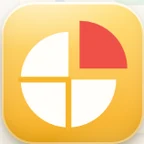
Fractions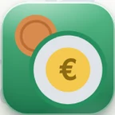
Monnaie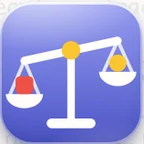
Balance à plateaux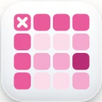
Table de multiplication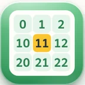
Tableau des nombres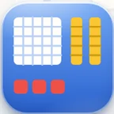
Tableau de numération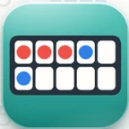
Boîtes de 10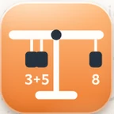
Balance des nombres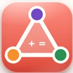
Triangle des opérations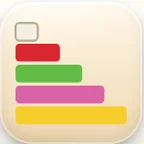
Réglettes Cuisenairevos données
Glacis n'a besoin ni d'Internet ni d'un compte. Tout ce qui concerne vos élèves reste dans un dossier de votre ordinateur.
Élèves, emploi du temps, cahier journal, documents : tout est rangé dans un dossier de votre ordinateur. Rien n'est envoyé en ligne.
Le réseau de l'école tombe ? La classe continue. Glacis fonctionne entièrement hors ligne, une fois installé.
3Mo
L'installateur pèse environ 3 Mo. Un mode léger coupe les effets sur les postes anciens.
À la souris depuis le fond de la classe, ou au stylet : en mode TBI, on écrit par-dessus ce qui est affiché.
Glacis se met à jour de lui-même, et refuse tout fichier dont la signature ne correspond pas.
sur Windows
Bientôt disponible
Installation sans droits d'administrateur. L'installateur n'est pas signé par Microsoft : si Windows affiche « Windows a protégé votre ordinateur », choisissez « Informations complémentaires » puis « Exécuter quand même ». Ensuite, Glacis se met à jour de lui-même (Réglages › Mises à jour).
Glacis en est la suite, sous un nouveau nom. C'est une nouvelle application : elle s'installe à côté de l'ancienne.
un logiciel libre
« Glacis – Ma classe » est conçu et développé par Franck VARAULT, enseignant de CP : conception pédagogique, choix des fonctionnalités, architecture, tests en classe et validation de chaque version. Le code a été écrit avec l'aide d'assistants de programmation par IA, sous sa direction.
Logiciel libre sous licence GNU GPL version 3 ou ultérieure ; documentation sous licence CC BY-SA 4.0. Les fichiers de mise à jour sont signés : Glacis refuse un fichier dont la signature ou l'empreinte ne correspond pas. Ce site ne contient aucune donnée d'élève : les prénoms visibles sur les images sont ceux d'une classe de démonstration.
Une question ? contact@glacis-classe.fr